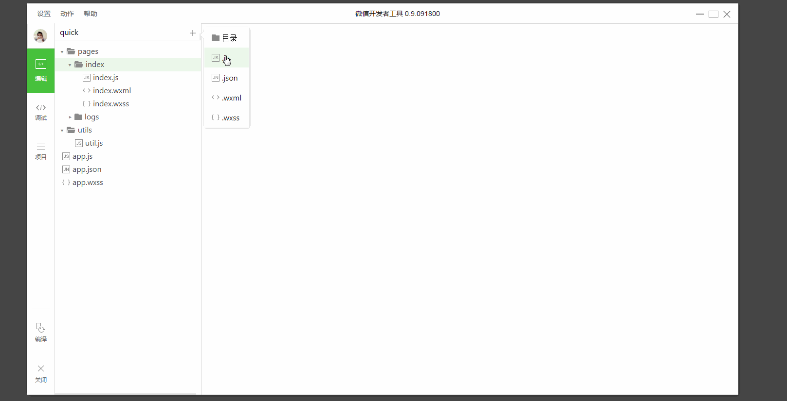
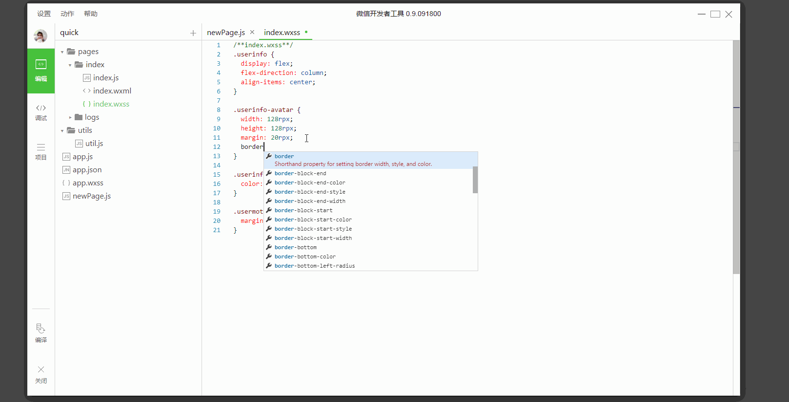

编辑区可以对当前项目进行代码书写工作，同时可以对文件进行基本的添加、删除以及重命名。
工具目前提供了4种文件的编辑：wxml wxss js json
自动补全
同大部分编辑器一样，我们提供了完善的自动补全


常用快捷键
格式调整
- Ctrl+S：保存文件
- Ctrl+[， Ctrl+]：代码行缩进
- Ctrl+Shift+[， Ctrl+Shift+]：折叠打开代码块
- Ctrl+C Ctrl+V：复制粘贴，如果没有选中任何文字则复制粘贴一行
- Shift+Alt+F：代码格式化
- Alt+Up，Alt+Down：上下移动一行
- Shift+Alt+Up，Shift+Alt+Down：向上向下复制一行
- Ctrl+Shift+Enter：在当前行上方插入一行
光标相关
- Ctrl+End：移动到文件结尾
- Ctrl+Home：移动到文件开头
- Ctrl+i：选中当前行
- Shift+End：选择从光标到行尾
- Shift+Home：选择从行首到光标处
- Ctrl+Shift+L：选中所有匹配
- Ctrl+D：选中匹配
- Ctrl+U：光标回退